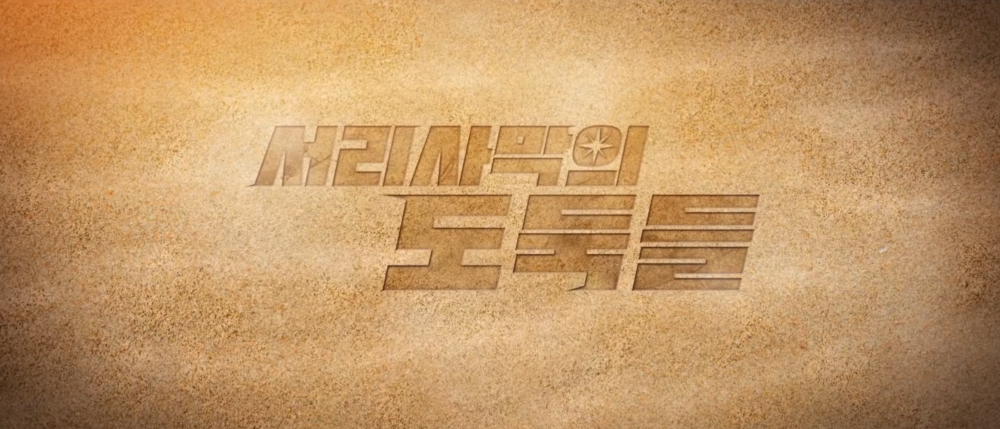
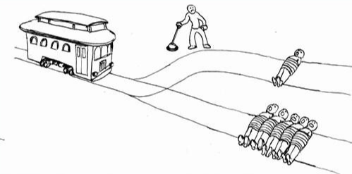

| 자빱의 마인크래프트 콘텐츠 | ||
| 우정리 노트 | 빱라임씬 | 토깽뎐 |
| 여걸세븐 | 자매꽃이 피었습니다 | 동개's 할로윈 파티 |
| 자빱상사 | 서리사막의 도둑들 | 계수떡집 오늘 쉬어갑니다 |
| 양들이 잠드는 시간 | 마고묵시룩 | |
|  | |
| 기획·제작 자빱TV | |
| 진행 자빱TV | |
| 진행 기간 2021년 1월 16일 ~ 2021년 4월 10일 |
서리사막의 도둑들은 유튜버 자빱이 기획·제작·진행한 시청자 참여형 마인크래프트 콘텐츠이다. 서리사막에 사막의 심장이 있다는 소식을 듣고, 계획적으로 YJK 교도소에 오게 된 괴도 P1 의 본격 전문적인 서리와 사막의 심장에 거미줄처럼 얽혀있는 진실을 파헤치는 코미디 스릴러 범죄추리물 콘텐츠 이다. 해당 작품은 2021년 1월 16일부터 4월 10일까지 10회 (편집본 40부작) 으로 방송되었다. 주로 작중 내에서는 플레이어들 간의 연대와 서사가 집중적으로 비춰진다.
| 서리사막의 도둑들 예고편 |
| 재소자들 | ||
| 이름 | 죄수번호 | 별명 |
| 김자빱2 | 8253 | 괴도 p, 짬바니 |
| 도동개 | 4982 | 스콜피온 |
| 류도롱 | 5252 | MOS |
| 박달곰 | 7942 | 타바스코, 탑독 |
| 독고루미 | 9977 | 불도저, 부리 |
| 마우수 | 4988 | 신밧드, 할매 |
하이나3 | 7070 | 죠죠 |
| 미연개4 | 5594 | |
| 교도관들 | |
| 이름 | 별명 |
| 허참새 | 맘스터치 |
| 김호랭 | 헤르쯔 |
이외의 npc들
서리사막의 심장은 현대의 YJK교도소를 중심적으로 그려진다.
서리사막은 자빱의 다른 작품들과 같이 여성 중심사회와 모계사회로 그려진다. 그래서 종종 어머니의 성씨를 따르는 게 목격되는 편.[스포일러]5
작중 가사노동이 교도소 안에서 그려져서인지, 여성이라서 해야하는 것이 아니라 재소자라서당연히 해야함으로 그려진다.
예를 들면, 오후 업무중 청소시간 때에는 다같이 청소를 하고, 군대의 취사병처럼 달곰이 배식 담당을6 선보인다.
그리고 재소자들 간의 끈끈한 유대감, 우정 그리고 연대감으로 보여지는 점이 특히 인상 깊다.
또한 마을 주민('NPC' 포함)을 포함한 등장인물은 모두 여성으로 구성되어 있다.
감옥이라서 그런지 비여성은 거의 나오거나 언급되지 않는다.
주로 교도관들의 안내에 따라 하루생활 루틴에 맞춰 규칙적으로 생활한다.
이 외에도 요청에 따른 다른 작업들도 종종 있는 편.

광차문제(鑛車問題, 영어: trolley problem)는 윤리학의 사고실험이다.